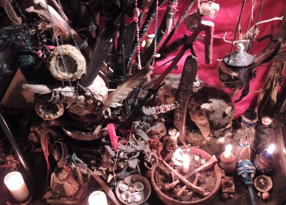
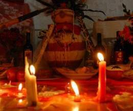

¿Qué es un Eggun?
Los Eggun son los espíritus de los ancestros o antepasados difuntos. Generalmente son santeros desencarnados, practicantes o simpatizantes que, tras su muerte, pasan a formar parte de este grupo espiritual bajo el poder del rey Oduduwá. La palabra "Eggun" o "Egungún" puede referirse a hueso o esqueleto, pero espiritualmente abarca todo el fenómeno de los difuntos. Son ellos quienes, mediante oráculos como el coco, dan permiso para que las ceremonias lleguen a Olodumare. "Ikú Lobi Osha" (El muerto pare al santo).
Atención a los muertos
Los muertos (ikús) o espíritus que nos rodean (egguns) deben estar atendidos y conformes. En la religión Yoruba, antes de saludar a los orishas, hay que invocar y pedir permiso a los muertos. Los Egguns comen antes que Elegguá y separados de los orishas. Se les ofrenda vela (ataná), coco (obi) en nueve pedacitos, agua fresca (omi tutu), aguardiente (otí), café (omi bona), tabaco (achá), pimienta de guinea y cascarilla. Esta ofrenda se sitúa habitualmente en el piso, fuera de la casa o en un rincón designado (teja de Eggun).
Ceremonia
La ceremonia comienza con la moyugba y la declaración de la ofrenda. Se pregunta a los egguns mediante los cocos si reciben la ofrenda y qué se hace con los residuos. Es fundamental que los presentes sean marcados con una cruz de cascarilla en la frente como protección.
Bóveda Espiritual
Muchos religiosos atienden a su cuadro espiritual mediante la Bóveda Espiritual. Es un altar con copas de agua, un crucifijo y flores, que sirve para fortalecer a los guías y protectores de la persona. En el espiritismo puro se usan oraciones y cantos, mientras que en el espiritismo cruzado con Osha se añaden elementos como aguardiente y tabaco.
Culto Ancestral
El culto a Eggun es universal y antiquísimo. Se basa en rendir honor a los difuntos y atender sus necesidades. En África, los ancianos eran enterrados en las casas y la familia les rendía tributo constante. El "Palo de Eggun" o "Ariku Bambaya" es un bastón decorado que se usa para llamar a los espíritus golpeando el suelo al ritmo de los rezos.
Todos los altares deben tener representación de los cuatro elementos: Tierra (flores), Aire (incienso/voz), Fuego (velas) y Agua (vasos de agua).
Cantos a Eggun
Atana lau lau eggun fumi lau lau...
A umba wa ori, awa osun awa oma leri...